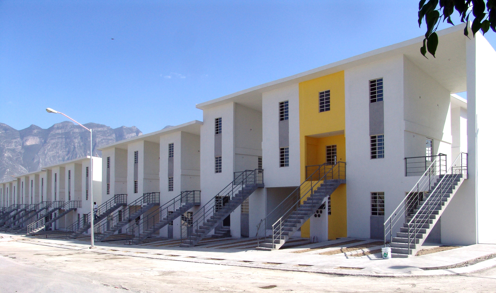

LA COMUNITA' NEL PROGETTO ARCHITETTONICO

Alejandro Aravena è un architetto, dal 2006 direttore di Elemental, un’organizzazione che si occupa principalmente di realizzare interventi di edilizia sociale e pubblica. Nel 2016 vinse il Pritzker Prize grazie al progetto Chile Barrio.
A partire dal 2010 infatti il governo di Nuevo Leon in Messico diede il via ad un progetto che prevedeva la costruzione di alloggi a basso costo per decine di famiglie a Monterrey in Messico. La sovvenzione prevista per ogni palazzina era 20000 US$, quasi il doppio dei fondi stanziati per un analogo precedente progetto in Chile. Le abitazioni costruite risultano dotate di luce e acqua e presentano una dimensione di circa 25/30 mq.
Grazie ad un sondaggio Aravena capì che il desiderio comune dei nuovi inquilini era di poter espandere aumentando di valore e personalità le proprie case una volta trovato lavoro in città. Per sopperire a questa richiesta è stato pensato un sistema che permettesse agli inquilini di espandere in maniera controllata le proprie abitazioni da una dimensione di 30mq ad una di 72mq.
La soluzione è stata quella di costruire a lotti alterni lasciando delle aree che permettessero l’espansione dell’abitazione, essendo costruiti su tre livelli l’espansione era possibile sia in verticale che in orizzontale. Sono state pensate anche delle corti centrali dedicati alla comunità per favorire l’aggregazione sociale.
La stessa strategia costruttiva era già stata adottata in Chile ad Ibique nel progetto di Quinta Monroy e sempre in Cile a Constituciòn nel progetto di Villa Verde.